Usaha & Energi Kinetik
Memahami hubungan fundamental antara gaya yang melakukan usaha terhadap perubahan energi gerak suatu benda.
Learning Outcomes
Setelah mempelajari bab ini, mahasiswa diharapkan mampu:
- Mendefinisikan konsep usaha (work)
- Menghitung usaha oleh gaya konstan maupun gaya yang berubah (pegas)
- Menjelaskan konsep energi kinetik dan makna fisiknya
- Menerapkan teorema usaha–energi kinetik
- Memecahkan permasalahan mekanika dengan pendekatan energi

Tekan panah kanan atau swipe untuk melanjutkan
Dosen Pengampu
Ir. Fidelis Gigih Triatmaja, S.T., M.T.
Dosen Fisika Dasar — Politeknik ATMI Surakarta
Gaya vs Usaha
Perhatikan keempat aktivitas berikut. Apa hubungan gaya, usaha, dan energi di sini?
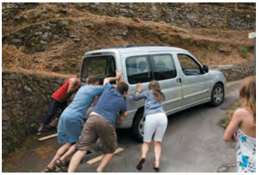
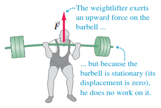
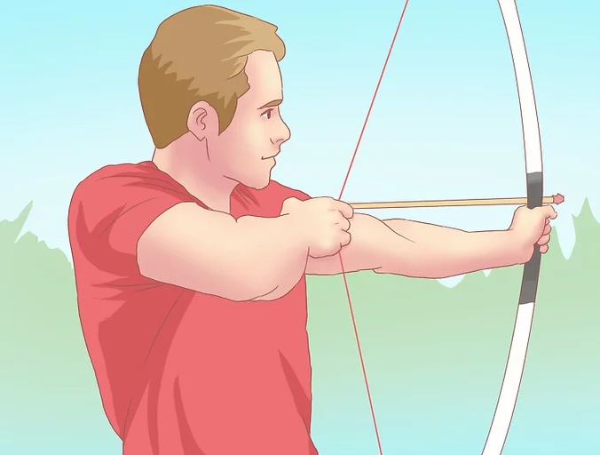
Pertanyaan
Dalam fisika, usaha membutuhkan perpindahan. Jika Anda mendorong tembok sekuat tenaga dan tembok tidak bergerak, secara fisika Anda tidak melakukan usaha pada tembok ($W = 0$). Gaya harus menyebabkan benda berpindah tempat agar usaha terjadi.
Gaya yang Anda berikan melakukan usaha positif. Usaha ini berubah bentuk menjadi energi kinetik (energi gerak). Semakin besar usaha yang dilakukan pada benda, semakin besar peningkatan energi kinetiknya, yang berarti benda bertambah cepat.
Secara biologis, otot-otot Anda berkontraksi dan menghabiskan energi kimia (sehingga Anda capek). Namun, secara fisika pada benda (tembok), karena tidak ada perpindahan ($d = 0$), maka usaha total pada tembok adalah nol ($W = F \cdot 0 = 0$).
Definisi Usaha (Work)
Dalam fisika, usaha memiliki definisi yang sangat spesifik, berbeda dengan pemahaman sehari-hari. Usaha terjadi hanya ketika gaya berhasil menyebabkan perpindahan.
Di mana:
- $W$ = Usaha (Joule)
- $F$ = Gaya konstan (Newton)
- $d$ = Displacement / Perpindahan (meter)
- $\theta$ = Sudut antara vektor gaya dan perpindahan
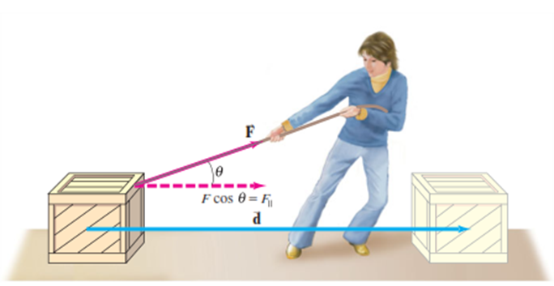
Hanya komponen gaya yang sejajar dengan perpindahan ($F \cos\theta$) yang melakukan usaha pada benda!
Jika tidak ada perpindahan ($d = 0$), maka usaha = 0 Joule, tidak peduli seberapa besar gayanya!
Perhatian: Usaha adalah Besaran Skalar!
Meskipun dihitung dari besaran vektor (Gaya dan Perpindahan), usaha tidak memiliki arah. Usaha hanya bisa bernilai Positif, Negatif, atau Nol, tergantung pada sudut $\theta$.
Usaha Positif, Negatif, & Nol
Kondisi Dasar: F sebagai Sumber Gerak
Pada kasus paling sederhana, gaya $\vec{F}$ adalah penyebab benda bergerak. Arah gaya dan perpindahan selalu sama ($\theta = 0°$). Semakin besar gaya, semakin besar usaha yang mentransfer energi ke benda.
Kondisi Umum: F sebagai Gaya Luar
Benda sudah bergerak (arah $\vec{d}$), lalu sebuah gaya luar $\vec{F}$ bekerja membentuk sudut $\theta$. Hanya komponen gaya searah gerak ($F \cos\theta$) yang melakukan usaha!
Gaya memiliki komponen searah gerak benda. Usaha positif mentransfer energi kepada benda (kecepatan bertambah).
Gaya tegak lurus terhadap perpindahan. Contoh: Menahan tas berjalan di lantai datar. Tidak ada energi kinetik yang berubah.
Gaya berlawanan arah dengan gerak. Usaha negatif mengambil energi dari benda (kecepatan berkurang/melambat).
Studi Kasus: Atlet Angkat Besi (Weightlifter)
- Menahan barbell di udara (diam): Meskipun otot capek, karena tidak ada perpindahan ($d=0$), maka usaha pada barbell adalah $W = 0$ Joule.
- Mengangkat barbell: Tangan mendorong ke atas, barbell berpindah ke atas. Gaya dan perpindahan searah ($\theta = 0°$), sehingga $W > 0$ (Positif).
- Menurunkan barbell: Tangan mendorong ke atas, tapi barbell berpindah ke bawah. Gaya dan perpindahan berlawanan arah ($\theta = 180°$), sehingga $W < 0$ (Negatif). Barbell melakukan usaha pada tangan!
Usaha Total (Total Work)
Cara 1: Jumlah Aljabar Usaha
Hitung usaha oleh masing-masing gaya secara terpisah, lalu jumlahkan secara aljabar (perhatikan tanda +/-).
Cara 2: Usaha oleh Gaya Neto
Cari resultan gaya (gaya neto) terlebih dahulu, lalu hitung usaha yang dilakukan oleh gaya neto tersebut.
Studi Kasus: Traktor dan Sled
Seorang petani mengaitkan traktornya pada sled berisi kayu bakar dan menariknya sejauh 20 m di sepanjang tanah datar. Total berat sled dan beban adalah 14.700 N. Traktor menarik dengan gaya konstan 5000 N pada sudut 36,9° di atas horizontal. Sebuah gaya gesek sebesar 3500 N melawan gerak sled.
- Perpindahan, $d = 20\text{ m}$
- Berat total, $w = 14.700\text{ N}$
- Gaya tarik traktor, $F_T = 5000\text{ N}$
- Sudut tarikan, $\theta = 36.9^\circ$
- Gaya gesekan, $f = 3500\text{ N}$
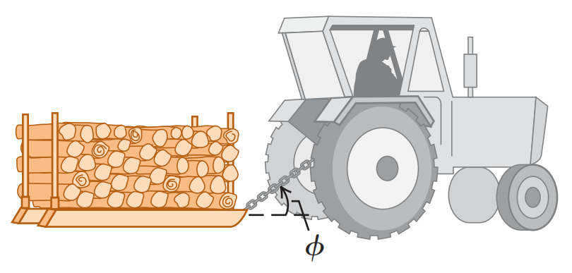
Ilustrasi Sistem FisikLangkah Penyelesaian
Sebelum menghitung usaha, kita harus mengisolasi sled dan menggambar semua gaya yang bekerja padanya (Free Body Diagram). Perhatikan arah masing-masing vektor gaya!
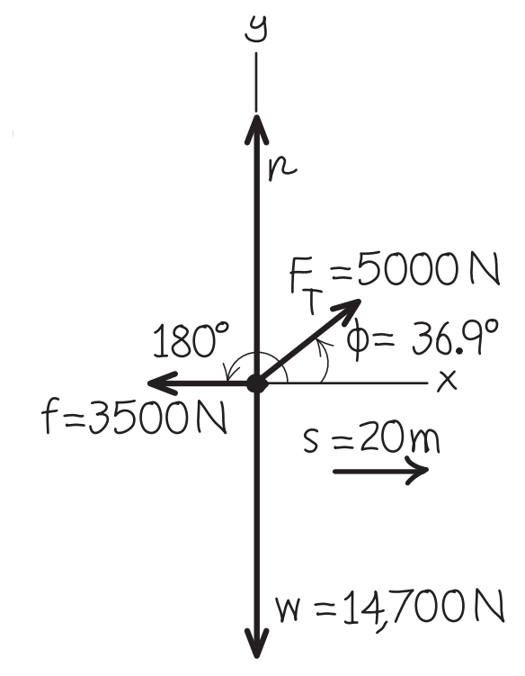
Terdapat 4 gaya utama: Berat ($w$) ke bawah, Normal ($n$) ke atas, Gaya tarik traktor ($F_T$) miring ke atas, dan Gaya gesek ($f$) melawan gerak ke kiri.
Gaya berat ($w$) dan gaya normal ($n$) tegak lurus terhadap arah perpindahan (sumbu-x). Oleh karena itu, sudut antara gaya-gaya ini dengan perpindahan adalah $\theta = 90^\circ$.
Catatan: Gaya vertikal tidak melakukan usaha pada benda yang bergerak horizontal!
Gaya tarik traktor memiliki komponen searah perpindahan ($\theta = 36.9^\circ$). Karena $\theta < 90^\circ$, usaha yang dihasilkan positif (mempercepat benda). Perhatikan bahwa $\cos(36.9^\circ) = 0.800$.
Gaya gesekan selalu berlawanan arah dengan gerak benda. Sudut antara gaya gesek dan perpindahan adalah $\theta = 180^\circ$. Karena $\cos(180^\circ) = -1$, usaha yang dihasilkan negatif (menghambat benda).
Menggunakan Cara 1 (Jumlah Aljabar Usaha):
Kita jumlahkan semua usaha yang telah dihitung pada langkah 2, 3, dan 4:
Menggunakan Cara 2 (Usaha oleh Gaya Neto):
Kita hitung resultan gaya (gaya neto) pada arah perpindahan (sumbu-x), karena hanya gaya di sumbu-x yang melakukan usaha.
Langkah 2a: Mencari komponen gaya pada sumbu-x
Gaya tarik traktor $F_T$ kita uraikan komponen x-nya. Gaya gesek $f$ sudah searah sumbu-x (negatif).
Langkah 2b: Menghitung Gaya Neto pada sumbu-x ($\Sigma F_x$)
Jumlahkan gaya-gaya pada sumbu-x. Kita ambil arah gerak (ke kanan) sebagai arah positif, sehingga gaya gesek bernilai negatif.
Langkah 2c: Menghitung Usaha Total oleh Gaya Neto
Sekarang kita hitung usaha yang dilakukan oleh gaya neto ini sepanjang perpindahan $d$.
Energi Kinetik ($K$)
Energi kinetik adalah energi yang dimiliki suatu benda karena geraknya. Semakin cepat benda bergerak, semakin besar energi kinetiknya.
Di mana:
- $K$ = Energi Kinetik (Joule)
- $m$ = Massa benda (kg)
- $v$ = Kecepatan (m/s)
Sifat Penting Energi Kinetik:
- Selalu Positif: Karena massa ($m$) selalu positif dan kecepatan dikuadratkan ($v^2$), nilai $K$ tidak pernah negatif. $K = 0$ hanya saat benda diam.
- Besaran Skalar: Arah gerak tidak memengaruhi besarnya energi kinetik. Mobil bergerak utara atau selatan dengan 10 m/s memiliki $K$ yang sama.
Jika kecepatan benda menjadi 2 kali lipat, maka energi kinetiknya menjadi 4 kali lipat ($2^2 = 4$)!
Teorema Usaha–Energi Kinetik
Pernyataan Teorema:
Usaha total yang dilakukan oleh semua gaya yang bekerja pada suatu benda sama dengan perubahan energi kinetik benda tersebut.
Derivasi (Bukti Matematis)
Mari kita turunkan rumus ini menggunakan Hukum Newton II dan Kinematika. Klik setiap langkah untuk melihat penurunannya:
Gaya neto yang bekerja pada benda bermassa $m$ menghasilkan percepatan $a$:
Kita gunakan persamaan kinematika untuk percepatan konstan tanpa waktu ($v_2^2 = v_1^2 + 2ad$), lalu kita substitusikan nilai $a$ dari langkah 1:
Kita pindahkan massa ($m$) ke ruas kiri dan kalikan dengan perpindahan ($d$):
Ingat bahwa ruas kiri $(\Sigma F) \cdot d$ adalah definisi dari Usaha Total ($W_{tot}$), dan ruas kanan adalah perubahan Energi Kinetik ($\Delta K$).
Dari penurunan di atas, kita mendapatkan bentuk final Teorema Usaha–Energi Kinetik:
Memaknai Teorema Usaha–Energi
Benda Bertambah Cepat
Usaha positif menambah energi kinetik. $K_2 > K_1$, sehingga $v_2 > v_1$.
Kecepatan Tetap
Tidak ada perubahan energi kinetik. $K_2 = K_1$, sehingga $v_2 = v_1$ (bisa diam atau GLB).
Benda Melambat
Usaha negatif mengurangi energi kinetik. $K_2 < K_1$, sehingga $v_2 < v_1$.
Pertanyaan Konseptual (Balapan Kapal Es)
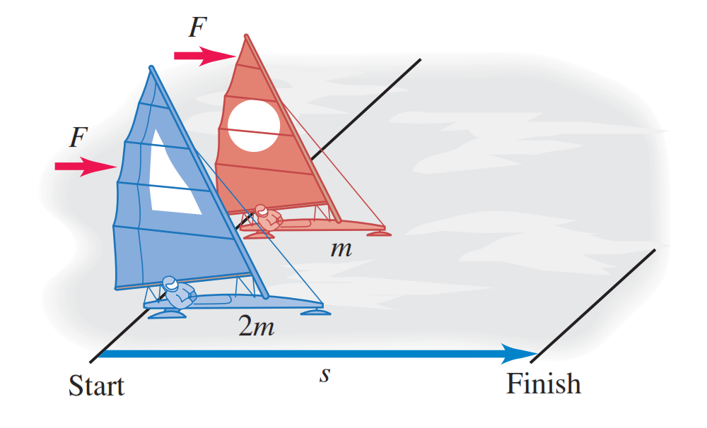
Ilustrasi Sistem FisikDua kapal es (iceboat) berlomba di danau bebas gesekan. Kapal A bermassa $m$, kapal B bermassa $2m$. Angin meniup keduanya dengan gaya konstan yang sama besar $F$, dan mereka berangkat dari diam. Manakah yang memiliki energi kinetik lebih besar saat melewati garis finish pada jarak $d$ yang sama?
Jawab: Keduanya memiliki energi kinetik yang SAMA!
Mungkin Anda mengira kapal B (massa lebih besar) punya energi lebih besar, atau kapal A (lebih ringan) lebih cepat sehingga energinya lebih besar. Mari kita gunakan Teorema Usaha-Energi:
Langkah 1: Hitung Usaha Total
Baik kapal A maupun B dikenai gaya $F$ yang sama dan berpindah jarak $d$ yang sama. Maka, usaha total pada kedua kapal adalah sama ($W_{tot} = Fd$).
Langkah 2: Terapkan Teorema Usaha-Energi
Usaha oleh Gaya Bervariasi
Sejauh ini, kita hanya menghitung usaha oleh gaya konstan. Bagaimana jika besar gaya berubah sepanjang perpindahan benda? (Contoh: mendorong mobil yang percepatannya berubah, atau merentangkan karet gelang).
Solusi: Interpretasi Geometris
Pada grafik Gaya ($F_x$) vs Posisi ($x$), usaha total sama dengan luas area di bawah kurva. Untuk gaya konstan, ini berbentuk persegi panjang. Bagaimana dengan gaya bervariasi?
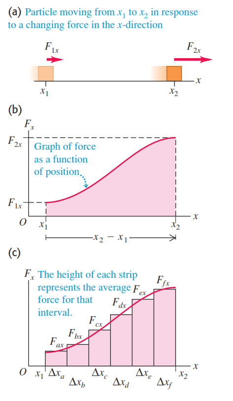
Memecah perpindahan menjadi segmen kecil17:02 20/05/2026Derivasi Menuju Integral
Kita tidak bisa pakai rumus $W = Fd$ karena $F$ berubah-ubah. Jadi, kita bagi total perpindahan menjadi banyak segmen kecil ($\Delta x_1, \Delta x_2, \dots$). Di setiap segmen yang sangat kecil ini, gaya hampir tidak berubah (misal $F_{x1}$).
Perhatikan gambar di atas: Kita menghitung luas tiap persegi panjang kecil lalu menjumlahkannya.
Agar hasilnya sangat tepat (segitiga lengkung di atas persegi panjang hilang), kita buat segmen $\Delta x$ semakin kecil hingga mendekati nol. Penjumlahan ini berubah menjadi integral tentu:
Secara geometris, integral ini persis sama dengan luas area di bawah kurva $F_x$ dari $x_1$ sampai $x_2$.
Usaha dan Gaya Pegas
Contoh paling umum dari gaya bervariasi adalah gaya pegas. Semakin jauh pegas ditarik atau ditekan dari posisi seimbang, semakin besar gaya yang diperlukan. Ini dikenal sebagai Hukum Hooke.
- $k$ = Konstanta pegas (N/m) - ukuran kekakuan pegas.
- $x$ = Perubahan panjang dari posisi setimbang (m).
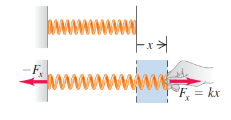
Gaya tarik F sebanding dengan pertambahan panjang xLangkah Perhitungan Usaha Pegas
Jika pegas awalnya rileks ($x_1=0$) lalu ditarik perlahan hingga $x_2=X$, grafik $F=kx$ akan membentuk garis lurus dari nol. Usahanya adalah luas segitiga di bawah garis tersebut.
Langkah 1a: Identifikasi alas dan tinggi segitiga
Alas segitiga = perpindahan $X$. Tinggi segitiga = Gaya akhir $F = kX$.
Langkah 1b: Hitung luas segitiga
Jika pegas sudah awalnya tertekan/tertarik sejauh $x_1$, lalu kita ubah menjadi $x_2$, luas di bawah kurva sekarang berbentuk trapesium.
Langkah 2a: Cara Luas Trapesium
Luas trapesium = Luas segitiga besar (dari 0 ke $x_2$) dikurangi Luas segitiga kecil (dari 0 ke $x_1$).
Langkah 2b: Cara Integral (Kalkulus)
Kita substitusikan $F_x = kx$ ke dalam rumus integral:
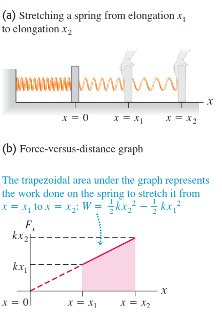
Area trapesium pada grafik gaya-posisi pegas (Klik gambar untuk perbesar)Perhatian: Usaha pada Pegas vs Usaha oleh Pegas
Rumus $W = \frac{1}{2}kx_2^2 - \frac{1}{2}kx_1^2$ menghitung usaha yang Anda lakukan pada pegas. Hati-hati dengan tanda positif/negatifnya!
- Anda menarik pegas (dari 0 ke X): Gaya Anda searah perpindahan. Usaha Anda positif ($+\frac{1}{2}kX^2$). Energi tersimpan di pegas.
- Pegas menarik tangan Anda kembali: Gaya pegas berlawanan dengan perpindahan tangan Anda. Usaha yang dilakukan pegas pada tangan Anda adalah negatif ($-\frac{1}{2}kX^2$).
Contoh Soal: Spy dan Brankas
Dua orang mata-mata berusaha memindahkan sebuah brankas bermassa 225 kg yang awalnya diam. Spy001 mendorong dengan gaya $F_1 = 12\text{ N}$ pada sudut $-30^\circ$ di bawah horizontal. Spy002 menarik dengan gaya $F_2 = 10\text{ N}$ pada sudut $40^\circ$ di atas horizontal. Brankas bergerak sejauh 8,5 m ke kanan.
- a) Usaha total yang dikerahkan pada brankas?
- b) Kecepatan akhir brankas?
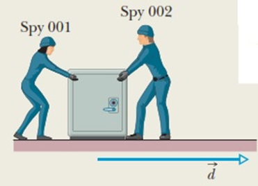
Ilustrasi Sistem FisikLangkah Penyelesaian (Pendekatan Teorema Usaha-Energi)
Kita analisis gaya-gaya yang bekerja pada brankas pada arah horizontal (sumbu-x), karena brankas hanya bergerak horizontal. Gaya Berat (Fg) dan Gaya Normal (Fn) tidak melakukan usaha.
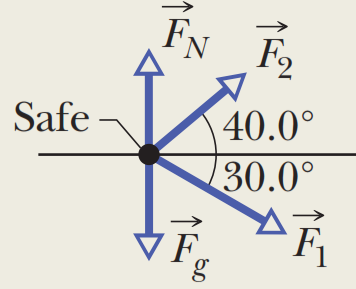
Diagram Benda BebasSpy001 mendorong ke bawah kanan ($-30^\circ$). Komponen gaya yang melakukan usaha adalah $F_{1x} = F_1 \cos(-30^\circ)$. Sudut negatif berarti di bawah sumbu-x, namun $\cos(-30^\circ) = \cos(30^\circ)$.
Spy002 menarik ke atas kanan ($40^\circ$). Komponen gaya yang melakukan usaha adalah $F_{2x} = F_2 \cos(40^\circ)$.
Jumlahkan usaha oleh kedua gaya tersebut (gaya vertikal melakukan usaha nol):
Gunakan Teorema Usaha-Energi: $W_{tot} = \Delta K = K_2 - K_1$. Brankas awalnya diam, sehingga $v_1 = 0$ dan $K_1 = 0$.
Daya (Power)
Dalam kehidupan sehari-hari, kita tidak hanya peduli berapa besar usaha yang dilakukan, tapi juga berapa cepat usaha itu dilakukan. Besaran yang mengukur laju usaha disebut Daya.
Di mana $P$ adalah daya rata-rata (Watt), $W$ adalah usaha (Joule), dan $t$ adalah waktu (sekon).
Daya Sesaat (Instantaneous Power)
Jika usaha dilakukan secara bervariasi, daya pada suatu saat tertentu adalah turunan usaha terhadap waktu, atau sama dengan perkalian titik gaya dan kecepatan:
Derek A dan Derek B mengangkat kontainer yang sama persis ke ketinggian yang sama. Derek A membutuhkan waktu 10 menit, sedangkan Derek B hanya butuh 2 menit. Mana yang melakukan usaha lebih besar? Mana yang memiliki daya lebih besar?
- Usaha: SAMA! Usaha hanya bergantung pada gaya dan perpindahan ($W = Fd$). Karena berat kontainer dan ketinggian angkatnya sama, usahanya pasti sama, terlepas dari berapa lama waktunya.
- Daya: Derek B lebih besar! Daya adalah laju usaha ($P = W/t$). Derek B menyelesaikan usaha yang sama dalam waktu lebih singkat, sehingga dayanya 5 kali lipat lebih besar daripada Derek A.
Peta Konsep: Usaha & Energi
Poin Penting yang Harus Diingat:
Terima Kasih!
Energi tidak pernah hilang, ia hanya berubah bentuk. Teruslah berusaha, karena usaha positif pasti akan menambah energi kinetikmu!
Politeknik ATMI Surakarta — Teknik Mesin Industri